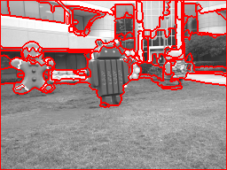
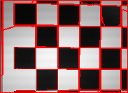
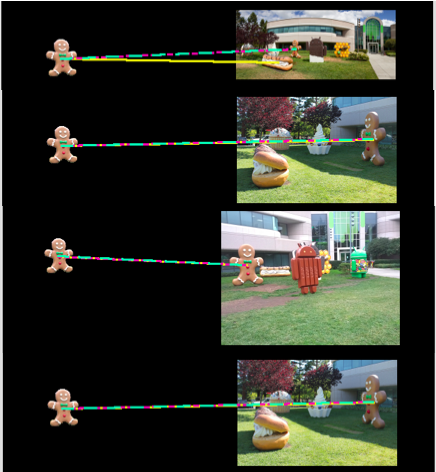
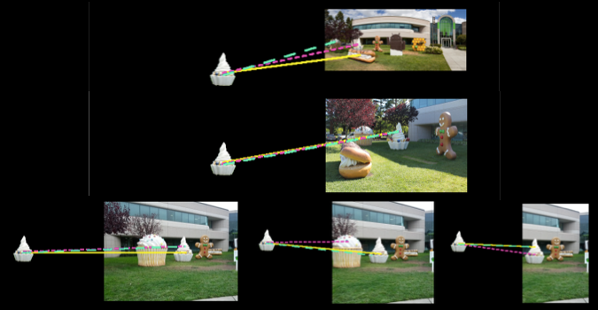
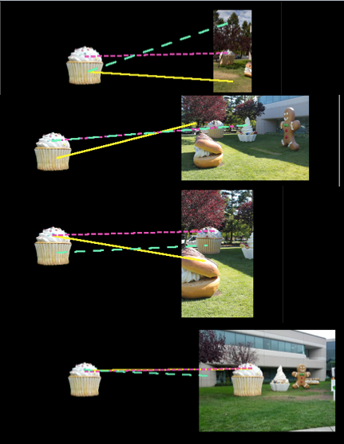

This holds a few summary notes and snapshots.
Machine Learning:
- Object detection with the
(SSD)
single-stage object detection algorithm.
Using transfer-learning from a pre-trained SSD model and re-fitting the
classifier using android lawn statue images
while retaining (not re-training) the detection head weights
learned from the COCO dataset, the android statues are identified in
video frames from a YouTube video.
The colab notebook. Summary snapshots and statistics.
{kind=link}
Highlights of computer vision algorithms (without machine learning):
- Finding an object in a segmented image by shape alone (ShapeFinder2.java)
has the true solution in the top matches, but not necessarily the top match,
and is more computationally expensive than other methods listed.
-
A correspondence list can be made quickly with
keypoints (e.g. Harris corners, inflection points, peaks in aTrous wavelets) and
the rotationally invariant ORB descriptors. RANSAC is also used to further remove outliers
through epipolar fits.
-
An improved Canny Edges Filter can be made for color images by combining the greyscale
Canny edges with the same made with the "C" image of the LCH colorspace.
-
MSER (Maximally Stable Extremal Regions) are a very fast algorithm that can be used
where level sets are needed. Using MSER on greyscale and on the "H" image of
LCH color space can find potential objects.
I combined the Canny color edges with the boundaries of MSER regions to create
edges that are complete contours (== segmentation).
The current version has some color filter rules that are potentially fragile and
the use of MSER is resolution dependent so a wrapper class is provided.
The results look promising.

  -
Finding an object in another image in which it has changed location, lighting,
and pose is not easy, but can be done with MSER and HOGs.
The current version has wrapper classes which help pre-prepare the images.
  
{kind=link}
{kind=link}
{kind=link}
{kind=link}
{kind=link}
{kind=link}
{kind=link}
{kind=link}
{kind=link}
{kind=link}
Some of the notes while implementing comp vis w/o machine learning: